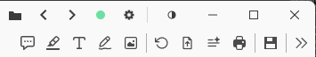
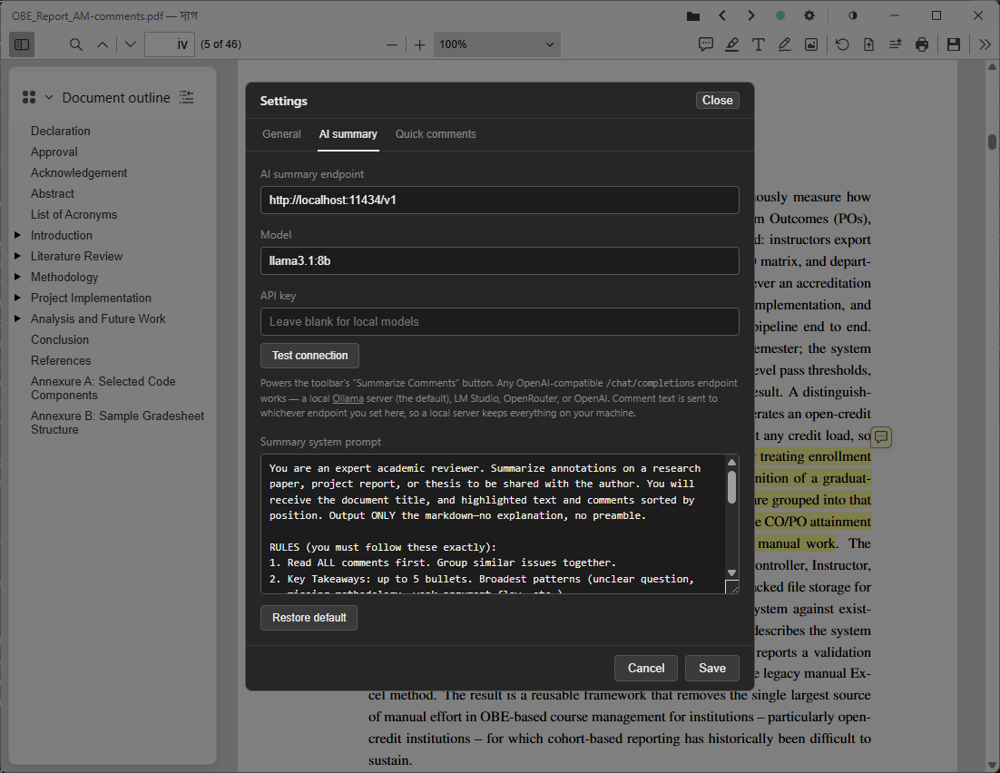

Guide
The keys, the common tasks, and every setting — one page. Everything you add to a PDF is saved back into the file automatically within a few seconds, so none of the steps below end with “now save”.
Keyboard shortcuts
These are the shortcuts Daag adds on top of pdf.js’s own (page navigation, Ctrl+F to find, and so on, which all still work).

| Key | Action |
|---|---|
| Ctrl/⌘ + S | Save now, without waiting for the autosave timer. |
| Ctrl/⌘ + W | Close the document and return to the landing screen (a pending save is flushed first). |
| Ctrl/⌘ + O | Open a PDF with the file picker. |
| Alt + ← / → | Previous / next PDF in the same folder as the open file. |
| F | Highlight tool. |
| A | Text-box (free-text) tool. |
| D | Draw (freehand ink) tool. |
| C | Comment on the current text selection. |
| Q | Open the quick-comment menu at the pointer. Right-clicking a page does the same. |
The single-key shortcuts (F A D C Q) pause while you’re typing in a text box or a comment, so they don’t fire from letters in your notes.
How-tos
Short recipes for the things people ask about most.
Annotating
Highlight, draw, or add a text box
Pick a tool from the toolbar, or press F, D, or A, then act on the page. What you add is written into the PDF within a few seconds — there is no Save step, though Ctrl+S forces one.
Comment on a passage
Select some text and press C (or use pdf.js’s floating comment button). Type the note; it stays attached to that spot.
Use quick comments
For phrases you write over and over, press Q or right-click the page and pick one — it drops in as a comment with no dialog. Type a new phrase into the menu’s box to add it. The list reorders by how often you use each phrase, and any comment you repeat within a document is folded in automatically. Manage the list under Settings → Quick comments.
Comments
Export the comments
Export Comments in the toolbar writes every comment to a separate file you can read or share outside the PDF.
Summarise the comments with AI
Summarize Comments in the toolbar sends the document’s comments to a language model and shows a written recap. The dialog opens straight away; Regenerate runs a fresh pass and Stop cancels one mid-flight. The result is cached per document, so pressing the button again is instant unless the comments changed.
Point the summary at a model
Out of the box Daag expects a local
Ollama at
http://localhost:11434/v1 running
llama3.2, so nothing leaves your machine. Under
Settings → AI summary you can set any OpenAI-compatible
endpoint (LM Studio, OpenRouter, OpenAI, …), the model, an
optional API key, and the system prompt. Test connection
checks the endpoint before you rely on it, and the summary
dialog’s own Model field switches models per run.
Files & navigation
Open a PDF
Use the Open button, drag a file onto the window, press Ctrl+O, or choose “Open with → Daag” in your file manager. Every route opens the real file on disk — Daag never loads a detached copy it can’t save back.
Work through a folder
With a file open, Alt+← / Alt+→ (or the titlebar arrows) step through the other PDFs in the same folder, like an image viewer.
Edit the original, or a copy
Settings → General → When opening a PDF decides what an open does: overwrite the original in place, always create a copy and edit that, or ask each time. When it asks, your answer is remembered per file.
Pick up where you left off
The landing screen lists recent files, most recent first. Reopening one returns to the page and scroll position you had. Daag does not reopen the last file on its own — the landing screen always greets you first.
Maintenance
Update the app
Daag checks GitHub for a newer release shortly after launch and shows a dialog if there is one; you can also check any time from Settings → Updates. Nothing downloads or installs until you click Install.
Enable long paths (Windows)
To open files whose full path is longer than 260 characters by drag-and-drop, Settings → Windows long path support shows the current state and an enable button. It changes a system-wide setting, so Windows asks for administrator approval, and Daag needs a restart afterwards. The file picker already handles long paths without this.
Settings reference
Open Settings from the titlebar gear. Changes in the General and AI summary tabs apply on Save; Quick comments edits apply immediately.

General
| Commenter name | Author name attached to the comments and annotations you create. Defaults to your OS username. |
| When opening a PDF | Always overwrite the original file (default), Ask each time, or Always create a copy. See “Edit the original, or a copy” above. |
| Updates | Shows the current version and a Check for updates… button. An available update downloads and installs in place, then restarts the app — only after you confirm. |
| Windows long path support | Windows only. Shows whether the system setting is on and offers to enable it (one administrator prompt, then a restart). Hidden on other platforms. |
AI summary
| AI summary endpoint |
Base URL of an OpenAI-compatible
/chat/completions API. Blank uses
http://localhost:11434/v1 (local Ollama).
|
| Model |
Model name sent with each request. Blank uses
llama3.2. The field remembers models you’ve
used, so switching is a pick.
|
| API key | Optional bearer token for hosted providers. Leave blank for local models. Sent only from the app’s Rust side, never from the page. |
| Summary system prompt | Instructions the model gets before your comments. Restore default puts back the bundled prompt. |
Quick comments
| Phrase list | Every quick-comment phrase with its use count and a Remove button. Starts empty — phrases are added by typing them into the menu or by repeating a comment within a document. Edits here take effect at once. |